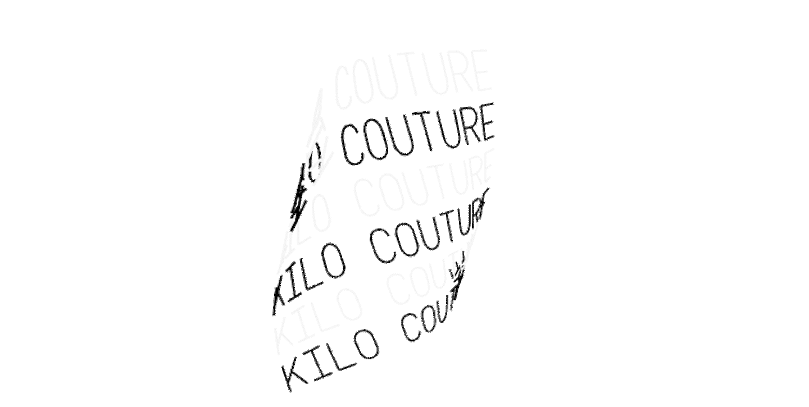

Kilo/Store
De Kilo/Store op het Waterlooplein is een duurzame instantie in Amsterdam die draait om thrift shopping. De Kilo/Store verkoopt tweedehands kleding per kilo, waardoor hergebruik wordt gestimuleerd en de afvalberg vermindert. Dit maakt het een duurzaam en toegankelijk alternatief voor fast fashion.
Daarnaast draagt de winkel bij aan het unieke karakter van Amsterdam door betaalbare, milieuvriendelijke mode aan te bieden aan zowel bewoners als bezoekers.
